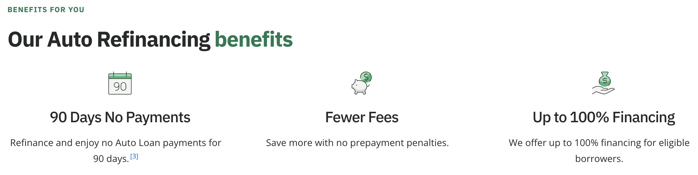
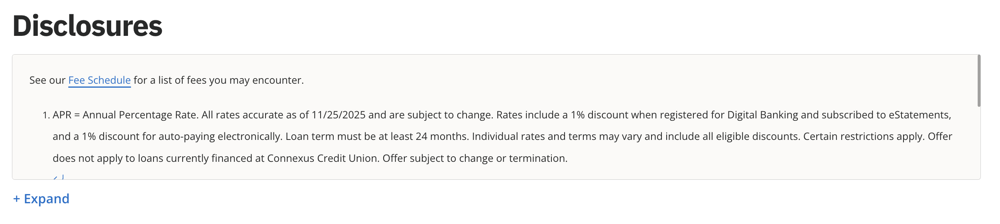
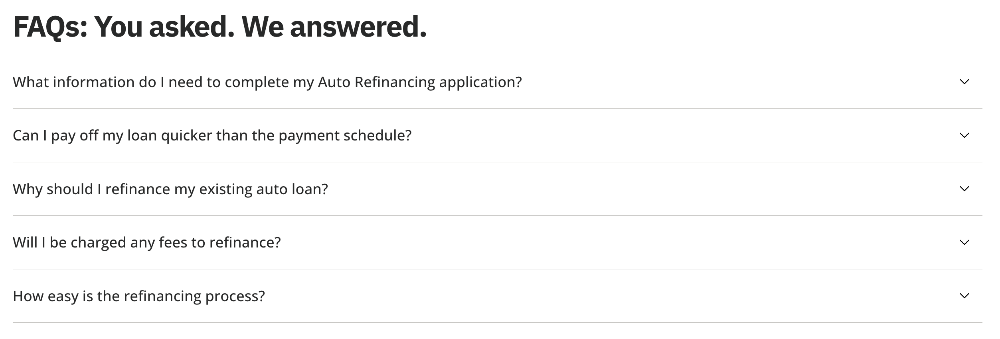

Connexus — Recent Work
Connexus is the 4th largest credit union in Wisconsin serving over 465,000 members. As a member of the marketing team, I work with our UX design team to bring designs to life. Using a Headless WordPress environment built with Next.js, I ensure accessibility and performance best practices are met. Every feature is built to be responsive on all screen sizes, and optimized for desktop and mobile.
This page showcases the work I've done at Connexus over the past ~5 years including interactive calculators, dynamic rate components, and other UI/UX deliverables.
Dynamic Checking Account Calculator
Powered by Chart.js to help users visualize potential benefits of a high-yield checking account.
Two key calculator views — "National Average comparison" and "Earnings."
See it live →

Auto Loan Payment Calculator
Custom visual tables and charts to simplify loan comparison for customers.
The component loads live rates from the WordPress CMS and updates dynamically based on user inputs.
See it live →
"Read more" on mobile
Expanding bio sections that keep pages concise on mobile devices while allowing users to dive deeper if desired.
Smooth animated open/close and dynamically detects content length for "no-maintenance" set up.
See it live →Mobile Card Slider
Built a mobile-first slider component for showcasing featured products on small screens.
Uses JavaScript to detect scroll position and updates the "dots" navigation accordingly. Dots can also be tapped to navigate directly to a slide.
See it live →Promo Cards
Built a second promotional system that shows multiple content blocks on a single canvas.
Allows for easy updates via CMS and has multiple layout options to fit different use cases.
See it live →
Dynamic Mobile Header
Animated show/hide header that maximizes screen real estate while keeping key info accessible.
Smooth transitions detect scroll direction and position and display the header accordingly.
See it live →Deposit Rate Tables Redesign
Dynamic rate table component that pulls live rates and renders them in a clear, accessible format.
Redesigned from the ground up to improve readability and usability on all screen sizes.
See it live →
Perks
Highlighting perks and rewards through a simple, visually-rich content block that drives engagement.
Content can be updated via CMS and supports multiple layout variants.
See it live →
Promo Component
A flexible promo component designed for featuring time-sensitive offers sitewide.
Supports multiple variants with perk-like bullet points, various CTAs, and image/illustration support.
See it live →
Disclosure UI
Optimized for readability and legal compliance while staying visually integrated with product pages.
Detects content length and adjusts expand/collapse layout accordingly. Also supports anchor linking to superscripts higher up the page.
See it live →
FAQs
Animated open/close FAQ section that improves user experience by allowing quick access to common questions and answers.
Also supports anchor linking which automatically expands the relevant FAQ when navigated to.
See it live →
These projects are only a few highlights of my work at Connexus. I've worked on hundreds more components, features, enhancements, bugfixes, and optimizations that contribute to a seamless user experience. Check out the website at connexuscu.org to see more of my work.